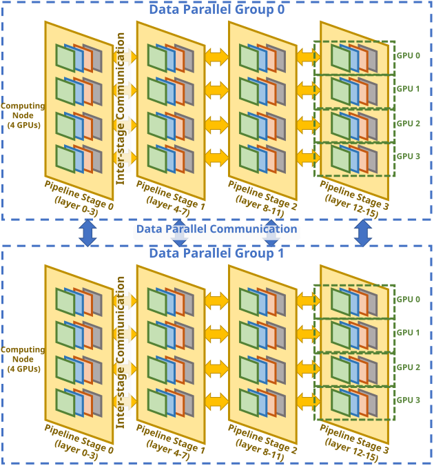

Intro to Tracing AI/ML Models with THAPI
Triton kernel naming + ITT tracing with THAPI/iprof
A practical observability story for distributed AI workloads: add semantic model regions, give kernel specializations useful names, and inspect the resulting timeline in one place.
Nathan S. Nichols
Why this matters
- Distributed AI training is a stacked execution problem: model code, runtime communication, and device kernels all interleave.
- At scale, each step mixes compute with collectives across ranks, so a slowdown is rarely visible from one layer alone.
- A useful trace needs enough context to answer three questions: which phase?, which rank/runtime event?, and which kernel variant?
Repeated on every rank, typically through communication libraries such as NCCL / XCCL / oneCCL.

Where existing profilers fall short
Triton specializations may differ in block size, warps, or stages, but the profiler view may not make those variants easy to distinguish.
Without semantic markers, the timeline mostly shows runtime activity and kernels, not initialization, forward, backward, or per-layer structure.
Distributed runs add ranks, collectives, and overlap. A trace with weak labels becomes hard to interpret precisely enough for debugging.
A layered observability view
1. Distributed runtime / communication
Which step is waiting on synchronization? Where are collectives and runtime events happening across ranks?
2. Model phases / semantic regions
Is time spent in initialization, data generation, forward, backward, optimizer step, or a specific layer block?
3. Kernel-level specialization
Which concrete Triton specialization ran there? Was it the block-size / warps / stages variant we expected?
ITT fills in the model-phase layer, Triton specialization names fill in the kernel layer, and THAPI/iprof captures the resulting events on one timeline.
Why trace at all, and where THAPI fits
- Timing summaries tell you how much time was spent, but traces tell you when things happened and what overlapped.
- For distributed AI, that means you can separate compute, communication, and idle / waiting on one time axis.
- That time alignment is what turns a slowdown from “something is off” into “rank 7 stalled in backward, right before an all-reduce, while these kernels were active.”
- THAPI is a tracing infrastructure for heterogeneous applications with backends including CUDA, OpenCL, Intel Level Zero, MPI, OpenMP, and CXI.
- iprof is the main user-facing tool, and it supports aggregated statistics, a timeline mode, and detailed traces.
- For this talk, the key mode is the timeline: capture once, then inspect the result in Perfetto.
Triton problem statement
- Triton often generates multiple kernel specializations for the same logical operation.
- Those specializations can differ in performance-relevant knobs like BLOCK_SIZE, num_warps, and num_stages.
- If the trace or profiler view does not expose a helpful name, it is hard to tell which specialization was active at a given point in time.
Triton solution: give each specialization a readable name
def _vadd_repr(proxy):
bs = proxy.constants["BLOCK_SIZE"]
w = proxy.constants["W_NAME"]
s = proxy.constants["S_NAME"]
return f"vadd_bs{bs}_w{w}_s{s}"
@triton.jit(repr=_vadd_repr)
def vadd(X_ptr, Y_ptr, Z_ptr, N,
BLOCK_SIZE: tl.constexpr,
W_NAME: tl.constexpr,
S_NAME: tl.constexpr):
...
- @triton.jit(repr=_vadd_repr) lets the kernel provide a custom specialization-dependent representation.
- The dummy constexpr fields W_NAME and S_NAME are there for naming only; they let the name encode warps and stages even though those are launch knobs.
- The callback reads the specialization constants through proxy.constants and builds a stable string.
Triton example: launch site and resulting names
grid = (triton.cdiv(N, block_size),)
vadd[grid](x, y, z, N,
BLOCK_SIZE=block_size,
W_NAME=num_warps,
S_NAME=num_stages,
num_warps=num_warps,
num_stages=num_stages)
Launch code from run_once(...) in the supplied example.
- Same logical kernel, but now each specialization is distinct in traces and profilers.
- This helps with debugging, attribution, and cross-checking that the expected launch configuration actually appeared.
- We can use the same trick to capture launch-time metadata, but the core concrete example here is the repr-based specialization name.
THAPI / iprof overview
- Run the application under
iprofto collect a timeline-oriented trace. - THAPI can export that timeline to a format you can inspect in Perfetto.
- When the application emits ITT regions, those semantic markers appear time-aligned with the rest of the runtime activity.
iprof captures the run, Perfetto is the viewer, and ITT gives the timeline human-meaningful labels.
Optional telemetry streams can also be aligned in time, but the main story here is semantic model tracing plus runtime activity.
What ITT adds to a trace
The Intel ITT API lets an application generate and control trace data, so the timeline can carry names that matter to the user instead of only low-level runtime events.
- Think in terms of domains and tasks / regions.
- A domain groups one logical workload; tasks mark the semantic scopes you care about.
- In this deck, those scopes are things like Init.Model, Forward, Backward, and per-layer regions.
ITT-instrumented Llama demo: before vs. after
Before: plain training loop
From train_llama3_demo.py
for step in range(args.steps):
x, y = get_batch()
optim.zero_grad(set_to_none=True)
logits = model(x)
loss = F.cross_entropy(...)
loss.backward()
optim.step()
After: semantic regions with ITT
From train_llama3_demo_with_itt.py
for step in range(args.steps):
with ittapi.task(f"Step.{step}", domain=args.itt_domain):
x, y = get_batch()
with ittapi.task("Forward", domain=args.itt_domain):
logits = model(x); loss = F.cross_entropy(...)
with ittapi.task("Backward", domain=args.itt_domain):
loss.backward()
with ittapi.task("Optimizer.Step", domain=args.itt_domain):
optim.step()
ITT granularity inside the model
def forward(self, x):
with ittapi.task(f"Layer.{self.layer_idx}",
domain=self.itt_domain):
with ittapi.task(f"Attn.{self.layer_idx}",
domain=self.itt_domain):
x = x + self.attn(self.n1(x))
with ittapi.task(f"MLP.{self.layer_idx}",
domain=self.itt_domain):
x = x + self.mlp(self.n2(x))
return x
Representative hierarchy; the exact number of layers depends on script arguments.
Running the demo with iprof
module load thapi
module load frameworks
mpiexec --no-transfer --cpu-bind ${CPU_BIND} -n 24 -ppn 12 $(pwd)/ccl_local_wrap.sh \
${THAPI_ROOT}/bin/iprof -l $(pwd)/demo_with_itt.pftrace --sample \
--trace-output $(pwd)/demo_with_itt -- \
$(pwd)/ccl_local_wrap.sh python train_llama3_demo_with_itt.py --device=xpu
- A trace is collected during the run.
- A Perfetto-friendly trace file such as demo_with_itt.pftrace is produced.
- You can then inspect ITT regions and runtime activity on the same timeline.
The README shows both the baseline command and the ITT-instrumented command. For this talk, the ITT version is the one that adds readable semantic structure to the trace.
Timeline interpretation in Perfetto
Why combine Triton naming + ITT tracing?
| Signal | What it tells you | Example question it answers |
|---|---|---|
| ITT regions | Model-phase and model-structure context | Was the slowdown in initialization, forward, backward, optimizer step, or a specific layer? |
| Triton specialization names | Which concrete kernel variant ran | Was this the bs128_w4_s2 version or the bs256_w8_s2 one? |
| THAPI/iprof timeline | Time alignment between those signals and runtime activity | Exactly when did that specialization appear inside the model step? |
Tips & guidance
- Keep Triton names stable, short, and meaningful.
- Instrument the major semantic regions first; add detail only where it improves interpretation.
- Avoid marker spam. More labels are not automatically better labels.
- Use a consistent ITT domain name for one logical workload.
- ITT regions only exist where you explicitly add them.
- The dummy Triton constexpr fields in this example are for naming only; they are not new algorithmic parameters.
Three takeaways
- Name Triton specializations so kernel variants are identifiable in traces and profilers.
- Add ITT regions so model execution is visible as semantic phases instead of unlabeled activity.
- Capture the run with THAPI/iprof so those labels become a usable, time-aligned timeline in Perfetto.